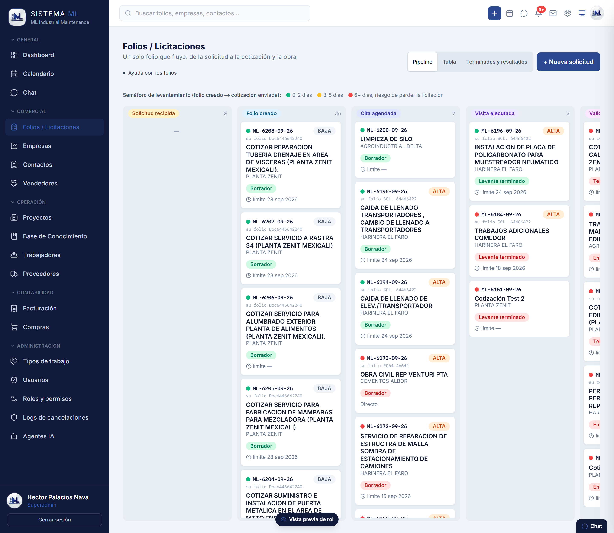
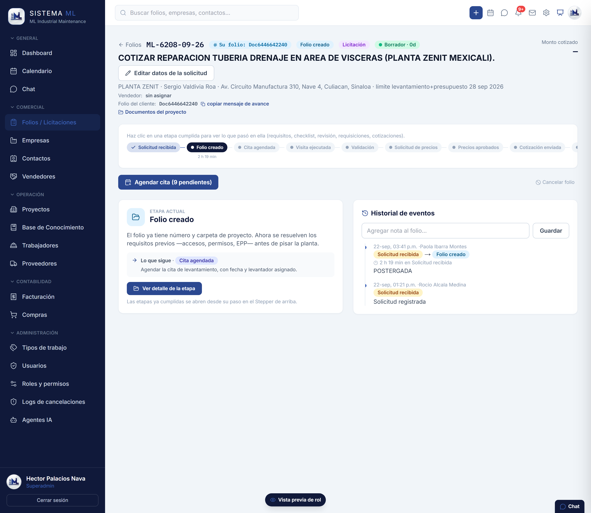
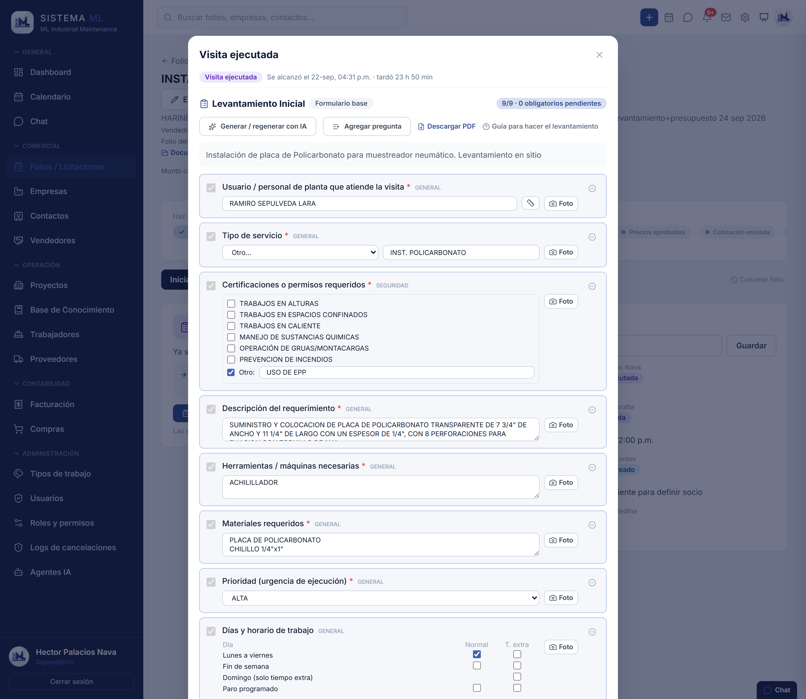
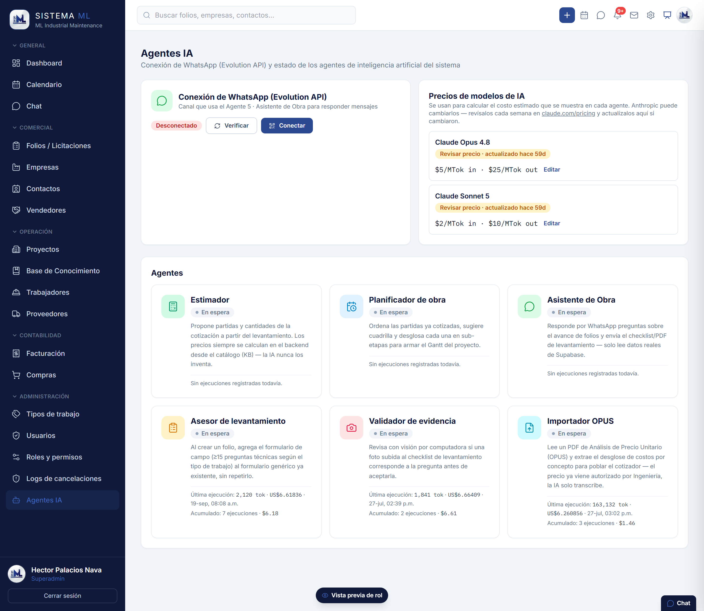
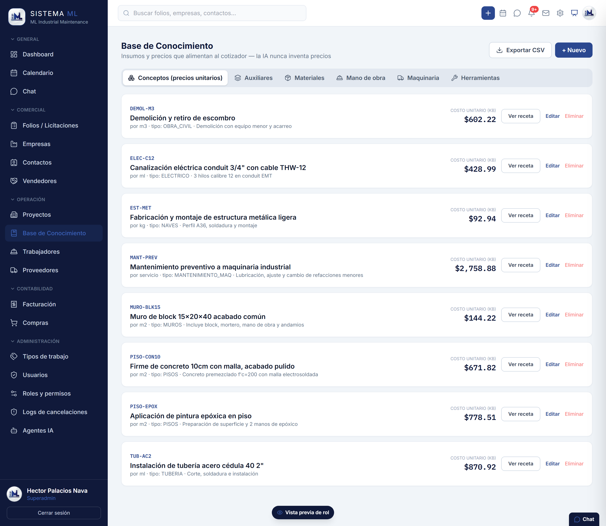
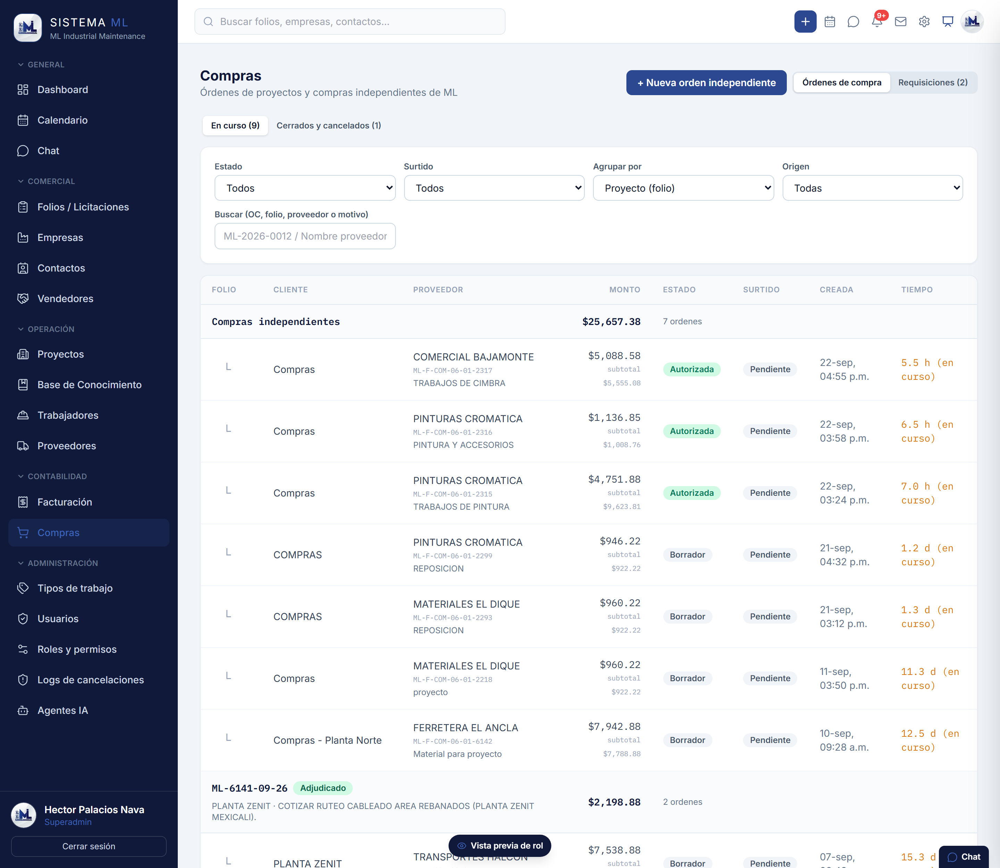
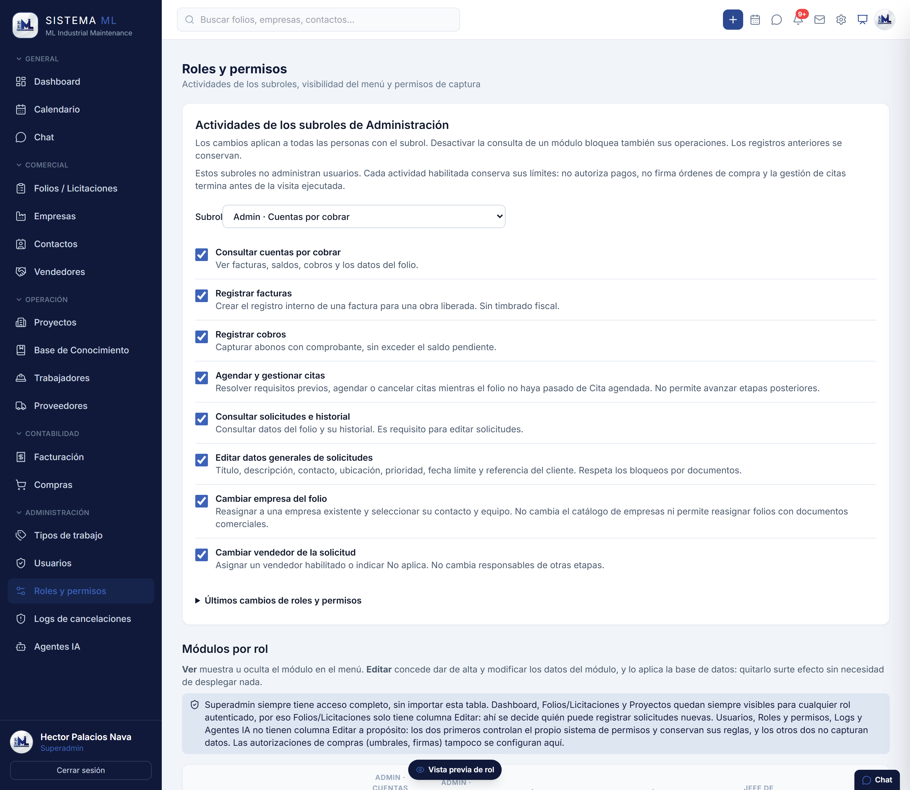
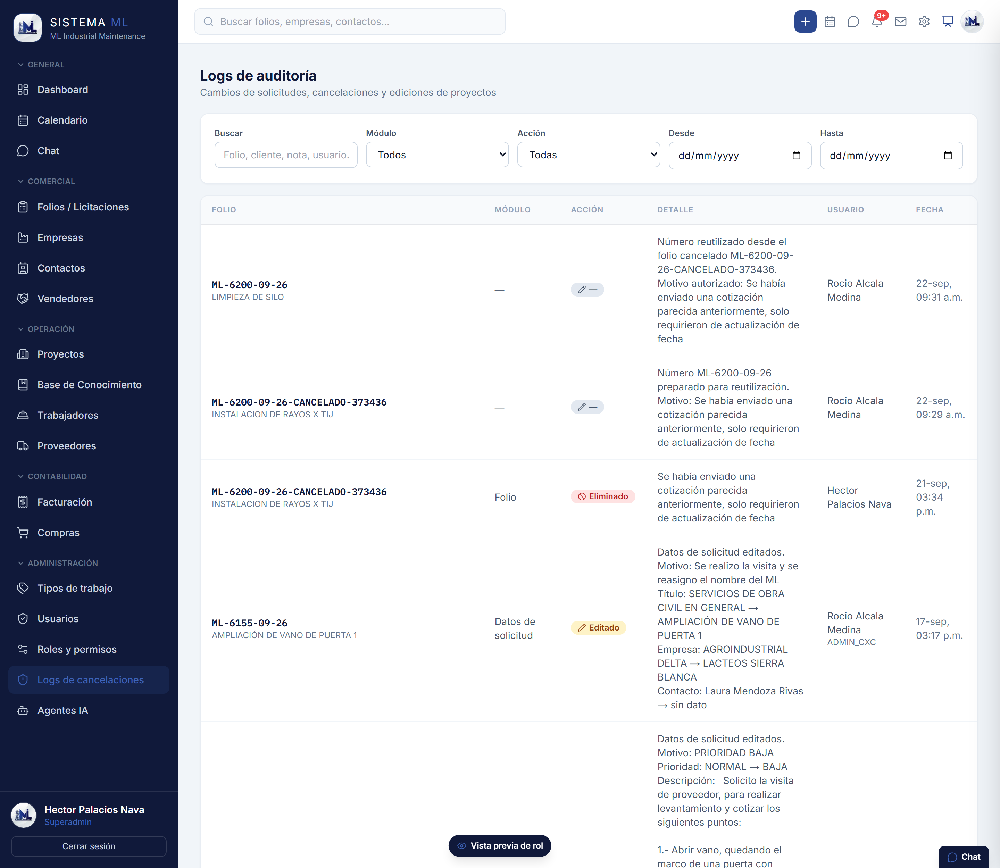
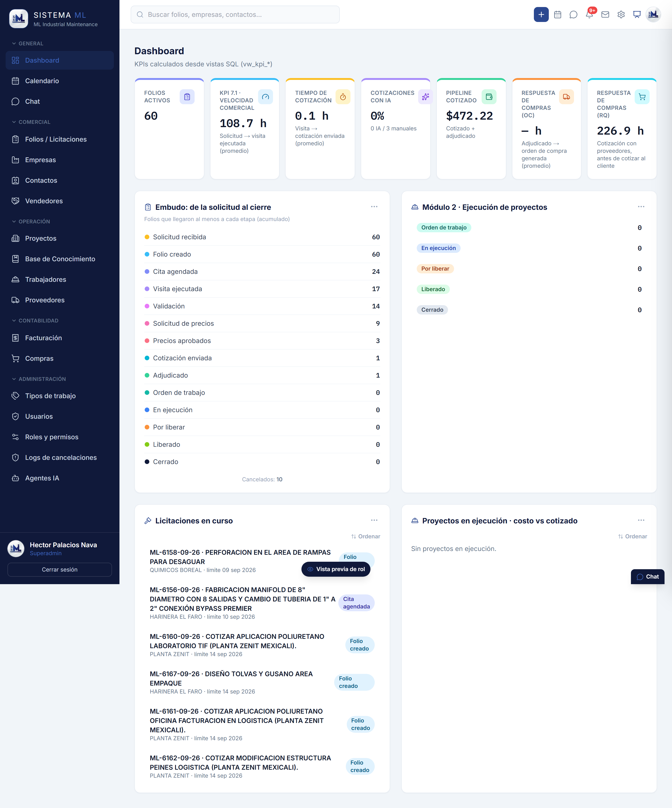
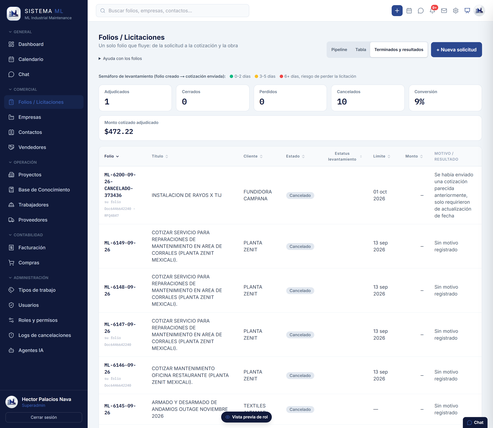

ML Industrial Maintenance · Resumen de ventajas · 22 de septiembre de 2026
Lo que cambió
al usar el sistema
Este documento no cuenta lo que se programó: cuenta lo que se hace distinto. Cada sección pone lado a lado cómo se resolvía un trabajo antes y cómo se resuelve hoy, con capturas del sistema corriendo. Se detiene especialmente en dos cosas que antes no existían de ninguna forma: los seis agentes de inteligencia artificial y el análisis de datos — los números que hasta ahora nadie podía sacar.
01 · De un vistazo
El tamaño de lo construido
No son pantallas sueltas: es un solo flujo que arranca cuando el cliente pide algo y termina cuando la obra se cobra, con la base de datos haciendo cumplir las reglas en cada paso.
Por qué importa que las reglas vivan en la base de datos
Las 84 funciones y las políticas de acceso no son adornos: significan que una regla —«sin autorización no sale la orden de compra», «este rol no ve costos»— se cumple aunque alguien entre por otro lado. No depende de que la pantalla se acuerde de esconder un botón.
02 · El resumen
Ocho cosas que se hacen distinto
El «antes» de cada par es el cuello de botella que ML describió al arrancar el proyecto, o la forma en que el propio sistema funcionaba en una versión anterior. El «ahora» está en producción y tiene captura más adelante.
Contestar una licitación
Sacar el número exigía cruzar a mano Ingeniería, Compras y proyección. Ese cruce era el cuello de botella, y en licitaciones el que contesta primero es el que gana — aunque después ajuste precio.
El número sale del catálogo
El levantamiento llega estructurado, el catálogo de precios ya está cargado y un agente propone las partidas y las cantidades. El importe lo calcula el sistema desde las recetas del catálogo, no una persona con una hoja aparte.
Saber en qué va cada trabajo
Había que preguntar. Nadie tenía a la vista cuántos folios estaban parados, en qué etapa, ni cuántos días llevaban esperando.
Un tablero con semáforo
Catorce etapas en columnas, cada folio en la suya, y un semáforo que se pone rojo a los seis días entre el folio creado y la cotización enviada: el punto exacto donde se pierde una licitación.
El levantamiento en campo
Lo que se preguntaba en la visita dependía de quién fuera. Las fotos llegaban sueltas y faltaba el dato justo cuando ya no se podía volver a la planta.
Un formulario que no deja avanzar
Formulario base por tipo de trabajo, con campos obligatorios y foto por pregunta. La IA agrega las preguntas específicas del caso y revisa que la foto sea evidencia de lo que se pidió. Sale en PDF.
De dónde salía el precio
De los análisis de precio unitario de OPUS y del criterio de quien cotizaba. Reconstruir por qué un trabajo costó lo que costó era un ejercicio de memoria.
Una base de conocimiento
Cada concepto tiene su receta: materiales, horas-hombre, herramienta y maquinaria. El costo se recalcula desde ahí y queda auditable. Los PDF de OPUS se importan con un agente en lugar de capturarse a mano.
Autorizar una compra
La firma iba en papel y el aviso de que algo esperaba autorización dependía de que alguien lo mencionara.
Umbral, firma y aviso
Arriba del umbral configurado la orden se detiene hasta que quien puede firmar, firma — y queda registrado quién y cuándo. Llega un aviso al celular en cuanto hay algo esperando.
Abrirle un permiso a alguien
Los permisos estaban escritos dentro del código. Habilitarle una operación a un área era pedir un cambio y esperar un despliegue.
Una casilla que surte efecto
Administración palomea la actividad en una pantalla y aplica en el momento, sin desplegar nada. La base de datos obedece la misma tabla que la pantalla.
Corregir un dato
Se corregía y ya. No quedaba quién lo cambió, ni qué decía antes, ni por qué.
Corregir con nombre y motivo
Editar una solicitud ya registrada está permitido, pero exige motivo y deja el antes → después en una bitácora consultable.
Medir
No había con qué. Cuántas horas tarda una cotización, cuántas licitaciones se pierden, cuánto cuesta realmente un proyecto contra lo cotizado: eran preguntas sin respuesta.
Once vistas de análisis
Velocidad comercial, tiempo de cotización, respuesta de Compras, embudo acumulado, conversión y costo contra cotizado. Calculado en la base de datos, no a mano.
03 · Operación
Un folio que no se pierde
Todo lo que ML hace para un cliente entra como un folio y vive en un solo expediente: la solicitud, la cita, el levantamiento, las requisiciones, la cotización, la orden de compra y el cobro. Nada de eso vive en hilos de correo separados.

Lo que resuelve
La pregunta «¿en qué va el de la planta tal?» se contesta mirando, no preguntando. Y la columna donde se acumulan las tarjetas señala sola dónde está el tapón.
El detalle que se pidió en campo
Cada columna se desplaza por su cuenta y tiene altura máxima: una etapa con treinta folios ya no estira la página ni deja a las demás en una franja vacía.

04 · Campo
El levantamiento dejó de ser una libreta
La visita a planta es donde se gana o se pierde la cotización: si falta un dato, o se adivina o se vuelve. El formulario de campo se lleva en el teléfono, marca sus obligatorios y no deja terminar la visita a medias.

- El formulario base nunca se pierde. Lo siembra la base de datos al crear el folio; la IA solo agrega encima. Si la IA no responde, la visita se hace igual.
- La foto se revisa. Si la pregunta pide una medida, el agente de visión revisa que se vea la cinta o el número, no solo el objeto.
- Es un aviso, no un candado. Si el agente dice que la foto no corresponde, el sistema pregunta; la última palabra es de la persona en planta.
- Sale en PDF. El mismo levantamiento se manda al cliente o se guarda como soporte de la cotización.
05 · Inteligencia artificial
Seis agentes, un solo principio
La IA del sistema no es un chat pegado a un costado. Son seis agentes con una tarea concreta cada uno, metidos en el punto del flujo donde hacen falta, y todos obedecen la misma regla: el agente propone, la persona dispone.

Estimador
Lee el levantamiento y propone las partidas del catálogo y sus cantidades. Nunca fija precios: recibe el catálogo sin importes y el costo lo calcula el servidor desde las recetas. Si no responde a tiempo, el cotizador abre en modo manual sobre el mismo catálogo.
Planificador de obra
Toma la cotización aprobada, ordena las partidas, sugiere cuadrilla y parte cada partida en sub-etapas de obra para armar el programa. Las horas-hombre no las inventa: salen de la receta del concepto y el servidor las reparte entre las sub-etapas.
Asesor de levantamiento
Al abrir el levantamiento, lee lo que ya se contestó y agrega preguntas de seguimiento específicas —si el servicio es soldadura y el material dice «tubería», pregunta diámetro y cédula—. No repite lo genérico y no borra nada de lo ya capturado en campo.
Validador de evidencia
Visión por computadora sobre cada foto que se sube al checklist: ¿esta imagen es evidencia de esta pregunta en concreto? Una foto de un estante no responde «profundidad del entrepaño»; hace falta ver la medida.
Importador OPUS
Lee el PDF de Análisis de Precio Unitario tal como sale de OPUS y extrae tarjeta por tarjeta el desglose de insumos para poblar el cotizador. Un PDF de treinta páginas lo parte solo en fragmentos traslapados que procesa en paralelo, para que ninguna tarjeta se pierda en el corte.
Asistente de Obra
Contesta por WhatsApp preguntas sobre el avance de un folio y manda el checklist o el PDF de levantamiento. Solo lee datos reales del sistema: no improvisa estados ni fechas.
Las tres reglas que hacen que se pueda confiar
- La IA nunca fija un precio. Propone el qué y el cuánto; el importe lo calcula el servidor de forma determinista desde la base de conocimiento. Dos cotizaciones del mismo trabajo dan el mismo número, y ese número se puede explicar renglón por renglón.
- Nada se envía sin aprobación humana. Todo lo que propone un agente entra como borrador. La cotización sale cuando alguien la aprueba, y esa aprobación queda registrada.
- Si la IA falla, el trabajo sigue. Cada agente tiene un tiempo límite y una salida: el cotizador abre en manual, el levantamiento se queda con su formulario base, la foto se sube igual. Ningún agente puede detener la operación.
Y cuánto cuesta
Cada llamada a un modelo registra sus tokens y su costo, y la pantalla de Agentes IA lo muestra por ejecución y acumulado. El gasto en IA es un número que se consulta, no una sorpresa en la tarjeta: los precios por modelo se editan ahí mismo cuando el proveedor los cambia.
06 · Costos
El precio no lo inventa nadie
La base de conocimiento es el corazón del cotizador: cada concepto trae su receta —qué materiales, cuántas horas de cada categoría, qué herramienta y qué maquinaria lleva por unidad— y de ahí sale el costo unitario. Subir el precio del acero se hace una vez y se refleja en todo lo que lo usa.

- Auditable. De cualquier importe se puede bajar hasta el insumo que lo produjo.
- Con fecha. Cada precio guarda cuándo se actualizó, para saber si se está cotizando con datos viejos.
- Reutilizable. Lo que se aprendió en un trabajo queda disponible para el siguiente, aunque lo cotice otra persona.
07 · Compras
Que el dinero no salga sin firma
Compras es donde el sistema deja de ser un tablero y empieza a mover dinero. Por eso es la parte con más candados: umbral de autorización, firma registrada, impuestos por proveedor y aviso al celular cuando algo espera.

- El umbral decide. Debajo del monto configurado la orden fluye; arriba se detiene hasta que firme quien puede.
- La firma tiene nombre. Queda quién autorizó y a qué hora, y eso sale impreso en la orden.
- El aviso llega al teléfono. No hay que estar mirando la pantalla para enterarse de que algo espera autorización.
- El folio de la orden es el que ML ya usaba. El formato ML-F-COM-06-01 se respetó tal cual, en vez de obligar a aprender uno nuevo.
08 · Control
Quién puede hacer qué
El cambio más silencioso y el que más tiempo ahorra: los permisos dejaron de estar escritos dentro del código. Hoy son una pantalla de casillas que Administración maneja, y la base de datos obedece esa misma tabla.

Lo que cambió en la práctica
Abrirle una operación a Cuentas por cobrar pasó de ser un cambio de código con despliegue a ser una casilla que surte efecto en el momento.
Y lo que no se puede tocar
Las autorizaciones de compra y el control del propio sistema de permisos quedan fuera de esa tabla a propósito: un permiso no puede usarse para abrirse más permisos.
09 · Auditoría
Todo cambio deja rastro
Corregir está permitido —en la operación real siempre hace falta—. Lo que no está permitido es corregir en silencio.

Esto es lo que vuelve discutible un número sin necesidad de reconstruir la historia de memoria: si un folio cambió de empresa, si una solicitud cambió de prioridad, si un número de folio se reutilizó después de una cancelación, ahí está con su razón.
10 · Análisis de datos
Los números que antes no existían
Esta es la ventaja que menos se nota el primer día y más pesa al tercer mes. Toda la operación pasa por el sistema, así que la operación se puede medir — y se mide en la base de datos, con vistas SQL, no con alguien vaciando a mano una hoja de cálculo.

| Indicador | La pregunta que contesta |
|---|---|
| Velocidad comercial | ¿Cuántas horas pasan entre que el cliente pide y la visita queda hecha? |
| Tiempo de cotización | ¿Y entre la visita y la cotización enviada? Aquí es donde se pierde una licitación. |
| Respuesta de Compras | ¿Cuánto tarda Compras en generar la orden, y cuánto en conseguir precios de proveedor? |
| Embudo acumulado | ¿En qué etapa se caen los folios? El escalón que más baja es el problema. |
| Conversión | De todo lo que se terminó, ¿qué porcentaje se ganó? |
| Costo contra cotizado | ¿El proyecto en ejecución va dentro de lo que se cotizó o ya se lo comió? |
| Cotizaciones con IA | ¿Qué parte de lo que se cotiza salió con apoyo del estimador y qué parte a mano? |

Sobre los números de estas capturas
La base de producción se limpió el 3 de septiembre de 2026 para arrancar en firme, así que los indicadores llevan pocas semanas acumulando. Por eso, por ejemplo, «Cotizaciones con IA» aparece en cero: las cotizaciones de este arranque se hicieron a mano. El valor del tablero no es lo que dice hoy, sino que a partir de ahora la pregunta tiene respuesta.
11 · Honestidad
Lo que todavía no está
Un documento de ventajas que no dice qué falta sirve de poco a la hora de decidir.
- Los agentes llevan pocas corridas. El estimador y el planificador están construidos y probados, pero en la base nueva casi no se han usado todavía. La pantalla de Agentes IA muestra el conteo real, sin maquillaje.
- La ejecución de obra es lo más joven. El módulo de proyectos —avance diario, horas reales, costo contra cotizado— es lo último que se abrió: hoy no hay proyectos en ejecución que lo alimenten.
- El asistente de WhatsApp depende de una conexión externa. En la captura aparece desconectado; se vuelve a vincular escaneando un código.
- Quedan pendientes conocidos. Están listados en las entregas semanales, que no se editan: cada una queda congelada como el registro de lo que se acordó ese día.
12 · Nota de privacidad
Los nombres y los números de estas capturas no son reales
Qué se sustituyó y cómo
Todas las imágenes de este documento son capturas del sistema real corriendo — no son maquetas —, pero ningún nombre de cliente, proveedor o persona que aparece en ellas es real, y ningún importe corresponde a una operación real.
La sustitución se hizo dentro del navegador, antes de disparar la captura: los nombres de empresas, razones sociales, domicilios, nombres de personas, RFC, teléfonos, correos, referencias de folio del cliente e importes se reemplazaron por valores inventados. Las capturas nacieron ya con los datos ficticios; no existe una versión sin censurar de estas imágenes.
Lo que sí es real es la estructura: las pantallas, los campos, los estados, los textos del sistema y la forma del flujo. Se conservan los conteos operativos agregados —cuántos folios hay en cada etapa, cuántas horas promedio tarda una cotización— porque no identifican a nadie.
Esto se hace para poder mostrar el sistema sin exponer la información comercial de los clientes de ML ni la de sus proveedores.